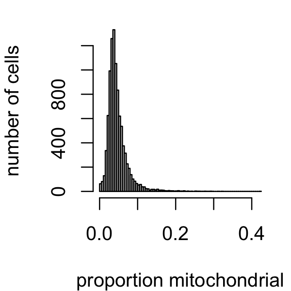
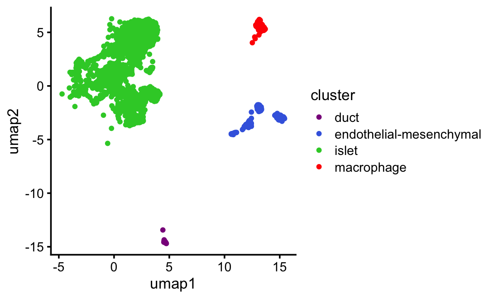

Last updated: 2025-06-11
Checks: 7 0
Knit directory:
single-cell-jamboree/analysis/
This reproducible R Markdown analysis was created with workflowr (version 1.7.1). The Checks tab describes the reproducibility checks that were applied when the results were created. The Past versions tab lists the development history.
Great! Since the R Markdown file has been committed to the Git repository, you know the exact version of the code that produced these results.
Great job! The global environment was empty. Objects defined in the global environment can affect the analysis in your R Markdown file in unknown ways. For reproduciblity it’s best to always run the code in an empty environment.
The command set.seed(1) was run prior to running the
code in the R Markdown file. Setting a seed ensures that any results
that rely on randomness, e.g. subsampling or permutations, are
reproducible.
Great job! Recording the operating system, R version, and package versions is critical for reproducibility.
Nice! There were no cached chunks for this analysis, so you can be confident that you successfully produced the results during this run.
Great job! Using relative paths to the files within your workflowr project makes it easier to run your code on other machines.
Great! You are using Git for version control. Tracking code development and connecting the code version to the results is critical for reproducibility.
The results in this page were generated with repository version ffad5cd. See the Past versions tab to see a history of the changes made to the R Markdown and HTML files.
Note that you need to be careful to ensure that all relevant files for
the analysis have been committed to Git prior to generating the results
(you can use wflow_publish or
wflow_git_commit). workflowr only checks the R Markdown
file, but you know if there are other scripts or data files that it
depends on. Below is the status of the Git repository when the results
were generated:
Untracked files:
Untracked: analysis/lps_cache/
Untracked: analysis/mcf7_cache/
Untracked: analysis/pancreas_cytokine_S1_factors_cache/
Untracked: analysis/temp2.R
Untracked: data/GSE132188_adata.h5ad.h5
Untracked: data/GSE183010/
Untracked: data/Immune_ALL_human.h5ad
Untracked: data/pancreas_cytokine.RData
Untracked: data/pancreas_endocrine.RData
Untracked: data/pancreas_endocrine_alldays.h5ad
Unstaged changes:
Modified: analysis/pancreas_cytokine_S1_factors.Rmd
Note that any generated files, e.g. HTML, png, CSS, etc., are not included in this status report because it is ok for generated content to have uncommitted changes.
These are the previous versions of the repository in which changes were
made to the R Markdown (analysis/pancreas_cytokine.Rmd) and
HTML (docs/pancreas_cytokine.html) files. If you’ve
configured a remote Git repository (see ?wflow_git_remote),
click on the hyperlinks in the table below to view the files as they
were in that past version.
| File | Version | Author | Date | Message |
|---|---|---|---|---|
| Rmd | ffad5cd | Peter Carbonetto | 2025-06-11 | wflow_publish("pancreas_cytokine.Rmd", verbose = TRUE, view = TRUE) |
| html | e876f20 | Peter Carbonetto | 2025-06-10 | Ran wflow_publish("pancreas_cytokine.Rmd"). |
| Rmd | 5249817 | Peter Carbonetto | 2025-06-10 | wflow_publish("pancreas_cytokine.Rmd", verbose = TRUE) |
| Rmd | 62b2934 | Peter Carbonetto | 2025-06-10 | Added steps to filter out mitochondrial and ribosomal protein genes from the pancreas_cytokine data set. |
| html | 5941ced | Peter Carbonetto | 2025-06-06 | Added a umap plot to the pancreas_cytokine analysis. |
| Rmd | 8168143 | Peter Carbonetto | 2025-06-06 | wflow_publish("pancreas_cytokine.Rmd", verbose = TRUE, view = FALSE) |
| html | af8e02d | Peter Carbonetto | 2025-06-06 | Build site. |
| Rmd | a33032f | Peter Carbonetto | 2025-06-06 | wflow_publish("pancreas_cytokine.Rmd", verbose = TRUE, view = FALSE) |
| html | d9cd610 | Peter Carbonetto | 2025-06-06 | Ran wflow_publish("pancreas_cytokine.Rmd"). |
| Rmd | c8b096b | Peter Carbonetto | 2025-06-06 | wflow_publish("pancreas_cytokine.Rmd", verbose = TRUE, view = TRUE) |
| Rmd | ea78d4f | Peter Carbonetto | 2025-06-06 | Fixed a bug in computing the size factors in the pancreas_cytokine analysis. |
| html | 8081d2c | Peter Carbonetto | 2025-06-05 | Build site. |
| Rmd | 281790b | Peter Carbonetto | 2025-06-05 | wflow_publish("pancreas_cytokine.Rmd", verbose = TRUE) |
| Rmd | e98c763 | Peter Carbonetto | 2025-06-05 | Fixed the clustering of the pancreas_cytokine data and added umap plots to the analysis. |
| Rmd | debdaa7 | Peter Carbonetto | 2025-06-05 | Added UMAP plot + clustering of pancreas_cytokine data. |
| Rmd | 3cac0e6 | Peter Carbonetto | 2025-06-05 | Added steps to the pancreas_cytokine analysis to filter cells and genes. |
| Rmd | 2af2dfd | Peter Carbonetto | 2025-06-05 | Added a few notes to the pancreas_cytokine analysis. |
| Rmd | 9e1f127 | Peter Carbonetto | 2025-06-05 | Added code to pancreas_cytokine analysis to prepare the scrna-seq data downloaded from geo. |
| html | 95aea28 | Peter Carbonetto | 2025-06-05 | First build of the pancreas_cytokine analysis. |
| Rmd | 773b4e4 | Peter Carbonetto | 2025-06-05 | wflow_publish("pancreas_cytokine.Rmd") |
| Rmd | 0a7a69e | Peter Carbonetto | 2025-06-04 | Created placeholder analysis pancreas_cytokine.Rmd. |
Here we will prepare the single-cell RNA-seq data from Stancill et al 2021 for analysis with fastTopics and flashier. The data files were obtained by downloading and extracting tar file GSE183010_RAW.tar from GEO accession GSE183010.
Load the R packages used to perform the data processing and analysis:
library(data.table)
library(Matrix)
library(tools)
library(rsvd)
library(uwot)
library(ggplot2)
library(cowplot)
# library(MatrixSparse)Set the seed for reproducibility:
set.seed(1)Import the count data from the “matrix market” format:
read_geo_data <- function (i, r, prefix = "GSM000000", dir = ".") {
infile <- sprintf("%s_Rep%d_S%d_barcodes.tsv.gz",prefix,r,i)
barcodes <- fread(file.path(dir,infile),quote = FALSE,header = FALSE,
stringsAsFactors = FALSE)
class(barcodes) <- "data.frame"
barcodes <- barcodes[,1]
infile <- sprintf("%s_Rep%d_S%d_features.tsv.gz",prefix,r,i)
genes <- fread(file.path(dir,infile),sep = "\t",quote = FALSE,
header = FALSE,stringsAsFactors = FALSE)
class(genes) <- "data.frame"
names(genes) <- c("ensembl","symbol","type")
genes <- transform(genes,type = factor(type))
infile <- sprintf("%s_Rep%d_S%d_matrix.mtx.gz",prefix,r,i)
counts <- fread(file.path(dir,infile),quote = FALSE,header = FALSE,
skip = 2)
class(counts) <- "data.frame"
names(counts) <- c("row","col","value")
n <- max(counts$row)
m <- max(counts$col)
counts <- sparseMatrix(i = counts$row,j = counts$col,x = counts$value,
dims = c(n,m))
rownames(counts) <- genes$ensembl
colnames(counts) <- barcodes
return(list(genes = genes,
counts = counts))
}
dat <- vector("list",8)
dataset <- 0
samples <- NULL
for (r in 1:2) {
for (i in 1:4) {
dataset <- dataset + 1
dat[[dataset]] <-
read_geo_data(i,r,prefix = paste0("GSM55486",23 + dataset),
dir = "../data/GSE183010")
samples <- rbind(samples,
data.frame(barcode = colnames(dat[[dataset]]$counts),
mouse = paste0("S",i),
replicate = r,
stringsAsFactors = FALSE))
}
}
samples <- transform(samples,
mouse = factor(mouse),
replicate = factor(replicate))
features <- Reduce(intersect,lapply(dat,function (x) x$genes$ensembl))
genes <- subset(dat[[1]]$genes,is.element(ensembl,features))
counts <- do.call("cbind",lapply(dat,function (x) x$counts[features,]))
counts <- t(counts)A good fraction of cells have fewer expressed genes. Let’s remove them:
par(mar = c(4,4,1,1))
x <- rowSums(counts > 0)
i <- which(x > 2000)
samples <- samples[i,]
counts <- counts[i,]
hist(x,n = 64,main = "",xlab = "number of genes",ylab = "number of cells")
A small number of cells have a large proportion of mitochondrial genes. Let’s remove those cells as well.
par(mar = c(4,4,1,1))
mito_genes <- which(substr(genes$symbol,1,2) == "mt")
s <- rowSums(counts)
s_mito <- counts[,mito_genes]
prop_mito <- rowSums(s_mito)/s
i <- which(prop_mito < 0.1)
samples <- samples[i,]
counts <- counts[i,]
hist(prop_mito,n = 64,main = "",xlab = "proportion mitochondrial",
ylab = "number of cells")
It seems that it might further be beneficial for some of the matrix factorization analyses to remove the mitochondrial and ribosomal protein genes, particularly since these genes are unlikely to be interesting. This code is adapted from here.
j <- which(!(grepl("^mt-",genes$symbol) |
grepl("^Rp[sl]",genes$symbol)))
genes <- genes[j,]
counts <- counts[,j]Remove Malat1, which typically shows variation for technical reasons:
j <- which(genes$symbol != "Malat1")
genes <- genes[j,]
counts <- counts[,j]Finally, a bunch of genes are not expressed in any cells. Let’s remove those as well:
x <- colSums(counts > 0)
j <- which(x > 0)
genes <- genes[j,]
counts <- counts[,j]Here’s an overview of the scRNA-seq data after these data filtering steps:
nrow(samples)
nrow(genes)
dim(counts)
mean(counts > 0)
# [1] 9354
# [1] 21792
# [1] 9354 21792
# [1] 0.2031521Now let’s generate a 2-d nonlinear embedding of the cells using t-SNE. First, transform the counts into “shifted log counts”:
a <- 1
s <- rowSums(counts)
s <- s/mean(s)
shifted_log_counts <- MatrixExtra::mapSparse(counts/(a*s),log1p)Then project the cells onto the top 30 PCs:
U <- rsvd(shifted_log_counts,k = 30)$uNow run UMAP on the 30 PCs:
Y <- umap(U,n_neighbors = 30,metric = "cosine",min_dist = 0.3,
n_threads = 8,verbose = FALSE)
x <- Y[,1]
y <- Y[,2]
samples$umap1 <- x
samples$umap2 <- ySpecify the clusters based on the UMAP plot:
samples$cluster <- "none"
samples$cluster[x > -3 & y > 5] <- "islet1"
samples <- transform(samples,cluster = factor(cluster))UMAP plot by cluster:
cluster_colors <- c("darkmagenta","royalblue","limegreen","red","darkorange")
samples$cluster <- "islet" # Gcg, Sst, Ins1, Ins2, Ppy, # Mafa, Mafb
samples$cluster[y < -16] <- "duct" # Krt19
samples$cluster[x > 11 & y > 4] <- "macrophage" # Ccr5
samples$cluster[x > 10 & y > -6 & y < 0] <-
"endothelial-mesenchymal" # Esam, Pecam1, Col1a1
samples <- transform(samples,cluster = factor(cluster))
ggplot(samples,aes(x = umap1,y = umap2,color = cluster)) +
geom_point(size = 1) +
scale_color_manual(values = cluster_colors) +
theme_cowplot(font_size = 10)
UMAP plot for the first (untreated) mouse only:
ggplot(subset(samples,mouse == "S1"),
aes(x = umap1,y = umap2,color = cluster)) +
geom_point(size = 1) +
scale_color_manual(values = cluster_colors) +
theme_cowplot(font_size = 10)
UMAP plot by mouse:
sample_colors <- c("limegreen","orange","darkblue","magenta")
ggplot(samples,aes(x = umap1,y = umap2,color = mouse)) +
geom_point(size = 1) +
scale_color_manual(values = sample_colors) +
theme_cowplot(font_size = 10)
Save the processed data to an RData file:
save(list = c("samples","genes","counts"),
file = "pancreas_cytokine.RData")
resaveRdaFiles("pancreas_cytokine.RData")
sessionInfo()
# R version 4.3.3 (2024-02-29)
# Platform: aarch64-apple-darwin20 (64-bit)
# Running under: macOS 15.4.1
#
# Matrix products: default
# BLAS: /Library/Frameworks/R.framework/Versions/4.3-arm64/Resources/lib/libRblas.0.dylib
# LAPACK: /Library/Frameworks/R.framework/Versions/4.3-arm64/Resources/lib/libRlapack.dylib; LAPACK version 3.11.0
#
# locale:
# [1] en_US.UTF-8/en_US.UTF-8/en_US.UTF-8/C/en_US.UTF-8/en_US.UTF-8
#
# time zone: America/Chicago
# tzcode source: internal
#
# attached base packages:
# [1] tools stats graphics grDevices utils datasets methods
# [8] base
#
# other attached packages:
# [1] cowplot_1.1.3 ggplot2_3.5.0 uwot_0.2.3 rsvd_1.0.5
# [5] Matrix_1.6-5 data.table_1.17.4
#
# loaded via a namespace (and not attached):
# [1] sass_0.4.9 utf8_1.2.4 generics_0.1.3
# [4] stringi_1.8.3 lattice_0.22-5 digest_0.6.34
# [7] magrittr_2.0.3 evaluate_1.0.3 grid_4.3.3
# [10] float_0.3-2 fastmap_1.1.1 R.oo_1.26.0
# [13] rprojroot_2.0.4 workflowr_1.7.1 jsonlite_1.8.8
# [16] R.utils_2.12.3 whisker_0.4.1 promises_1.2.1
# [19] fansi_1.0.6 scales_1.3.0 RhpcBLASctl_0.23-42
# [22] codetools_0.2-19 jquerylib_0.1.4 cli_3.6.4
# [25] rlang_1.1.5 R.methodsS3_1.8.2 RcppAnnoy_0.0.22
# [28] munsell_0.5.0 withr_3.0.2 cachem_1.0.8
# [31] yaml_2.3.8 parallel_4.3.3 dplyr_1.1.4
# [34] colorspace_2.1-0 httpuv_1.6.14 vctrs_0.6.5
# [37] R6_2.5.1 lifecycle_1.0.4 git2r_0.33.0
# [40] stringr_1.5.1 fs_1.6.5 irlba_2.3.5.1
# [43] MatrixExtra_0.1.15 pkgconfig_2.0.3 pillar_1.9.0
# [46] bslib_0.6.1 later_1.3.2 gtable_0.3.4
# [49] glue_1.8.0 Rcpp_1.0.12 highr_0.10
# [52] xfun_0.42 tibble_3.2.1 tidyselect_1.2.1
# [55] knitr_1.45 farver_2.1.1 htmltools_0.5.8.1
# [58] labeling_0.4.3 rmarkdown_2.26 compiler_4.3.3